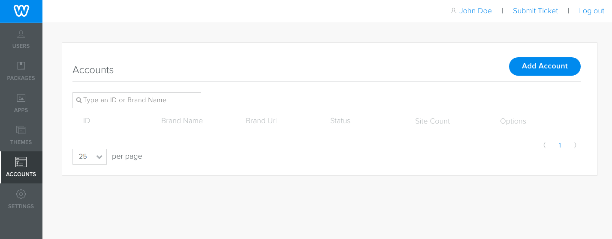
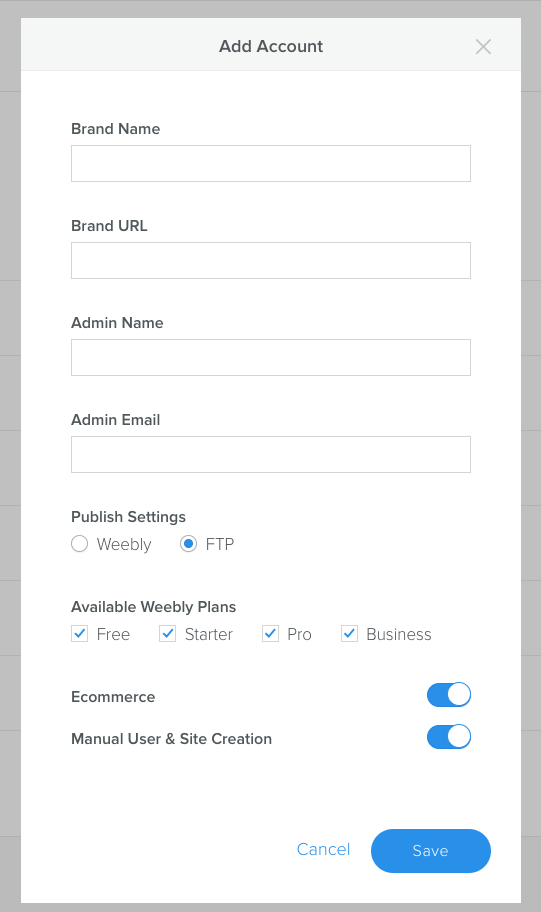
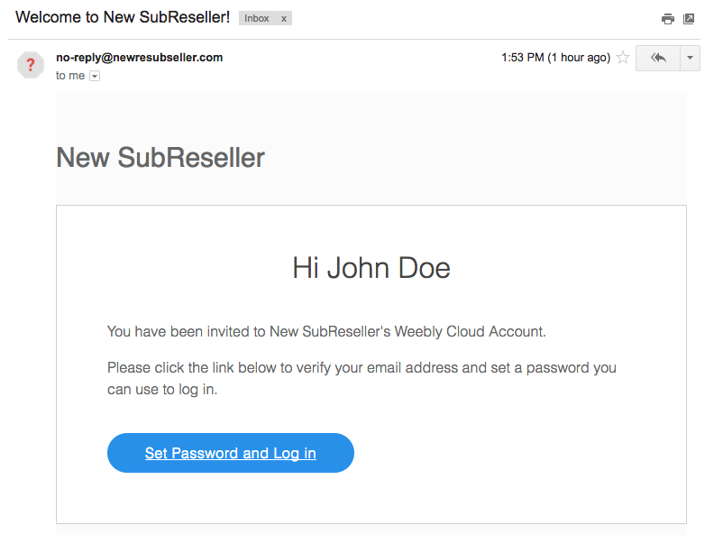
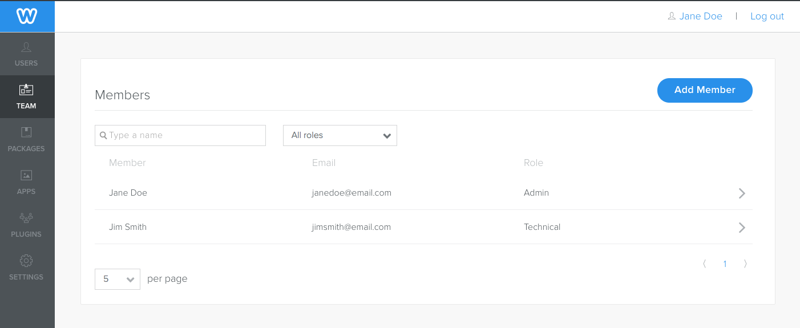
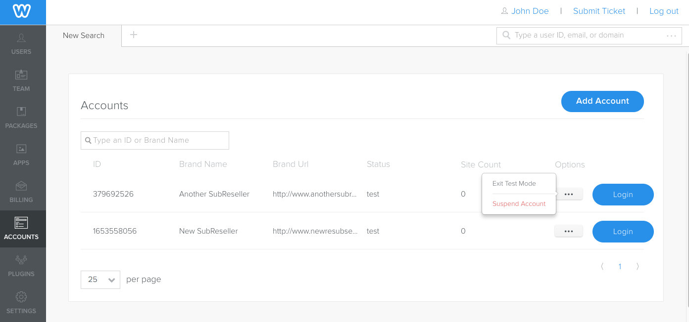

<!DOCTYPE html>
<head>
    <meta charset="utf-8">
<meta http-equiv="X-UA-Compatible" content="IE=edge">
<meta name="viewport" content="width=device-width, initial-scale=1">
<meta name="description" content="Subaccounts in Weebly Cloud are resellers of Weebly that are owned and managed through your account. These subaccounts, or "subresellers", allow you to manag...">
<meta name="keywords" content="getting_startedconfigurationusers,  subreseller, sub reseller, sub-reseller, sub account, account">
<title>Create and Manage Sub-Resellers | Weebly Cloud Developer Documentation</title>

<link rel="shortcut icon" href="images/favicon.ico">

<!-- Third-Party CSS -->
<link rel="stylesheet" href="css/syntax.css">
<link rel="stylesheet" type="text/css" href="https://maxcdn.bootstrapcdn.com/font-awesome/4.5.0/css/font-awesome.min.css">

<!-- Custom CSS -->
<link rel="stylesheet" media="screen" href="css/orbit-external.css">
<link rel="stylesheet" media="screen" href="css/orbit.css">
<link rel="stylesheet" media="screen" href="css/theme-weebly.css">

<!-- Third-Party JS -->
<script src="https://cdnjs.cloudflare.com/ajax/libs/jquery/2.1.4/jquery.min.js"></script>
<script src="https://maxcdn.bootstrapcdn.com/bootstrap/3.3.4/js/bootstrap.min.js"></script>
<script src="https://cdnjs.cloudflare.com/ajax/libs/anchor-js/2.0.0/anchor.min.js"></script>
<script src="js/jquery.navgoco.min.js"></script>
<script src="js/jekyll-search.js" type="text/javascript"></script>
<script src="js/toc.js"></script>

<!-- Custom JS -->
<script src="js/customscripts.js"></script>


</head>
<body>

<!-- Navigation -->

<div class="top-nav">

	<div class="top-nav-item">
		
	</div>

	<div class="top-nav-item">
		
	</div>

	<nav class="top-nav-item">
		<div class="nav-group">
			<ul class="NavList nav-group-list horizontal">
				<!-- entries without drop-downs appear here -->
				
				
				
				<li class="NavLinkLi">
					<a href="home.html" class="NavLink nav-group-list-link">Get Started</a>
				</li>
				
				
				
				<li class="NavLinkLi">
					<a href="cl_api_about.html" class="NavLink nav-group-list-link">Cloud API</a>
				</li>
				
				
				
				<li class="NavLinkLi">
					<a href="cl_plugins_about.html" class="NavLink nav-group-list-link">Plugins</a>
				</li>
				
				
				
				<li class="NavLinkLi">
					<a href="cl_apps_gs.html" class="NavLink nav-group-list-link">Apps</a>
				</li>
				
				
				
				<li class="NavLinkLi">
					<a href="cl_themes_start.html" class="NavLink nav-group-list-link">Themes</a>
				</li>
				
				
				
				<li class="NavLinkLi">
					<a href="cl_tags.html" class="NavLink nav-group-list-link">Tags</a>
				</li>
				
				
				
				<!-- entries with drop-downs appear here -->
				<!-- conditional logic to control which topnav appears for the audience defined in the configuration file.-->
				
				<!--
			<li class="NavLinkLi">


  <a class="email NavLink nav-group-list-link" title="Submit feedback" href="#" onclick="javascript:window.location='mailto:rwhitmore@weebly.com?subject=Weebly Cloud Developer Docs feedback&body=I have some feedback about the Create and Manage Sub-Resellers page: ' + window.location.href;">Feedback</a>

</li>

-->
        <li class="NavLinkLi">

  <a href="https://weeblycloud.com/admin" target="_blank">Cloud Admin</a>
</li>


		

                <li>
                    <!--start search-->
                    <div id="search-demo-container">
                        <input type="text" id="search-input" placeholder="Search...">
                        <ul id="results-container"></ul>
                    </div>
                    <!--end search-->
                </li>
            </ul>
        </div>
	</nav>
</div>


<div class="page has-sidebar">
    
      <div class="col-sidebar">
       	


<ul id="mysidebar" class="nav NavList">
    
	    
		    
	    
		    

			    <li class="NavLinkLi">
			        <a href="#" class="NavLink isSecondary">Get Started</a>
			        <ul class="NavList Children">
			            
			            

				            
					            <li class="NavLinkLi">
					            	<a href="home.html" class="NavLink isSecondary">Get Started with Weebly Cloud</a>
					            </li>
				            

				            
			            
			            
			            

				            
					            <li class="NavLinkLi">
					            	<a href="cl_gs_integration.html" class="NavLink isSecondary">Integration Overview</a>
					            </li>
				            

				            
			            
			            
			            

				            
					            <li class="NavLinkLi">
					            	<a href="cl_gs_admin.html" class="NavLink isSecondary">Use Weebly Cloud Admin</a>
					            </li>
				            

				            
			            
			            
			            

				            
					            <li class="NavLinkLi">
					            	<a href="cl_gs_client_ui.html" class="NavLink isSecondary">How Your Clients Work with You</a>
					            </li>
				            

				            
			            
			            
			            

				            
					            <li class="NavLinkLi">
					            	<a href="cl_gs_apps.html" class="NavLink isSecondary">Provide Apps to Your Customers</a>
					            </li>
				            

				            
			            
			            
			            

				            
					            <li class="NavLinkLi">
					            	<a href="cl_gs_hosting.html" class="NavLink isSecondary">Understand Hosting Options</a>
					            </li>
				            

				            
			            
			            
			            

				            
					            <li class="NavLinkLi">
					            	<a href="cl_gs_configure.html" class="NavLink isSecondary">Configure Weebly Cloud</a>
					            </li>
				            

				            
			            
			            
			            

				            
					            <li class="NavLinkLi">
					            	<a href="cl_gs_team_members.html" class="NavLink isSecondary">Create Cloud Admin Users</a>
					            </li>
				            

				            
			            
			            
			        </ul>
			    </li>
		    
	    
		    

			    <li class="NavLinkLi">
			        <a href="#" class="NavLink isSecondary">Integrate Weebly</a>
			        <ul class="NavList Children">
			            
			            

				            
					            <li class="NavLinkLi">
					            	<a href="cl_gs_plans.html" class="NavLink isSecondary">Create Plans</a>
					            </li>
				            

				            
			            
			            
			            

				            
					            <li class="NavLinkLi">
					            	<a href="cl_gs_users.html" class="NavLink isSecondary">Create and Manage Users</a>
					            </li>
				            

				            
			            
			            
			            

				            
					            <li class="NavLinkLi">
					            	<a href="cl_gs_cr_sites.html" class="NavLink isSecondary">Create Sites</a>
					            </li>
				            

				            
			            
			            
			        </ul>
			    </li>
		    
	    
		    

			    <li class="NavLinkLi">
			        <a href="#" class="NavLink isSecondary">Manage Weebly</a>
			        <ul class="NavList Children">
			            
			            

				            
					            <li class="NavLinkLi">
					            	<a href="cl_gs_upgrades.html" class="NavLink isSecondary">Handle Upgrades</a>
					            </li>
				            

				            
			            
			            
			            

				            
					            <li class="NavLinkLi">
					            	<a href="cl_gs_loginlink.html" class="NavLink isSecondary">Provide SSO Access with a loginLink</a>
					            </li>
				            

				            
			            
			            
			            

				            
					            <li class="NavLinkLi">
					            	<a href="cl_gs_editSites.html" class="NavLink isSecondary">Edit, Preview, and Publish Sites</a>
					            </li>
				            

				            
			            
			            
			            

				            
					            <li class="NavLinkLi">
					            	<a href="cl_gs_removeSites.html" class="NavLink isSecondary">Suspend and Remove Sites</a>
					            </li>
				            

				            
			            
			            
			            

				            
					            <li class="NavLinkLi">
					            	<a href="cl_gs_restore.html" class="NavLink isSecondary">Restore Elements, Pages, and Sites</a>
					            </li>
				            

				            
			            
			            
			            

				            
					            <li class="NavLinkLi">
					            	<a href="cl_gs_ssl.html" class="NavLink isSecondary">Allow Sites to Use SSL</a>
					            </li>
				            

				            
			            
			            
			            

				            
					            <li class="NavLinkLi">
					            	<a href="cl_gs_access_sites.html" class="NavLink isSecondary">Create and Manage Site Contributors</a>
					            </li>
				            

				            
			            
			            
			            

				            
					            <li class="active isActive NavLinkLi">
					            	<a href="cl_gs_subresellers.html" class="NavLink  isSecondary">Create and Manage Sub-Resellers</a>
					            </li>
				            

				            
			            
			            
			            

				            
					            <li class="NavLinkLi">
					            	<a href="cl_gs_market.html" class="NavLink isSecondary">Market to Your Customers in Weebly</a>
					            </li>
				            

				            
			            
			            
			            

				            
					            <li class="NavLinkLi">
					            	<a href="cl_gs_invoice.html" class="NavLink isSecondary">View and Pay Weebly Invoices</a>
					            </li>
				            

				            
			            
			            
			        </ul>
			    </li>
		    
	    
		    

			    <li class="NavLinkLi">
			        <a href="#" class="NavLink isSecondary">Troubleshooting</a>
			        <ul class="NavList Children">
			            
			            

				            
					            <li class="NavLinkLi">
					            	<a href="cl_gs_trouble.html" class="NavLink isSecondary">Troubleshooting Weebly Cloud</a>
					            </li>
				            

				            
			            
			            
			        </ul>
			    </li>
		    
	    
    

</ul>


<!-- this highlights the active parent class in the navgoco sidebar. this is critical so that the parent expands when you're viewing a page. This must appear below the sidebar code above. Otherwise, if placed inside customscripts.js, the script runs before the sidebar code runs and the class never gets inserted.-->
<script>
$("li.active").parents('li').toggleClass("active");
</script>

      </div>
    

    <div class="col-content">
        <div>
    <div class="post-header">
        <h1 class="post-title-main display-1">Create and Manage Sub-Resellers</h1>
    </div>
    <div class="page-type">  concepts  task </div>
</div>


<div class="post-content">

   
    <div class="summary">Subaccounts in Weebly Cloud are resellers of Weebly that are owned and managed through your account. These subaccounts, or "subresellers", allow you to manage the activity and settings of each of your resellers independently.</div>
   

    
    <!-- this handles the automatic toc. use ## for subheads to auto-generate the on-page minitoc. if you use html tags, you must supply an ID for the heading element in order for it to appear in the minitoc. -->
<script>
$( document ).ready(function() {

	$('#toc').toc({
		minimumHeaders: 2, // Don't show ToC if there is only one header
		listType: 'ul',
		showSpeed: 0,
		headers: 'h2'
	});

	/* this offset helps account for the space taken up by the floating toolbar. */
	$('#toc').on('click', 'a', function() {
	  var target = $(this.getAttribute('href'))
	    , scroll_target = target.offset().top

	  $(window).scrollTop(scroll_target - 50);
	  return false
	})

});
</script>

<div id="toc" class="toc"></div>

    

    

  <p>Each of your subresellers has a unique <code class="highlighter-rouge">reseller_id</code>, unique reseller settings and access to their own customers via Cloud Admin. Subresellers are not invoiced directly by Weebly - their charges appear on your invoice. All site activity is billed to your account with your configured wholesale pricing.</p>

<p>Parent resellers have the ability to create and manage their subresellers using the Cloud Admin and also via the <a href="cl_api_subaccount.html">Sub-Account API</a>.
​</p>

<div class="Notice type_info" role="alert">
	<b>Note:</b> The ability to have subresellers is not available to all Weebly Cloud accounts. Get in touch with your Account Manager or Business Development contact for more info.
</div>

<p>You create and manage subresellers from the <strong>Accounts</strong> tab of the Cloud Admin (available only to team members with a role of <code class="highlighter-rouge">admin</code> or <code class="highlighter-rouge">technical</code>).</p>
<figure class="post-content__figure">
	

	

	

	
		<figcaption>Sub-Resellers on the Accounts page</figcaption>
	</figure>

<p>​To create a new subreseller, click <strong>Add Account</strong>.</p>
<figure class="post-content__figure">
	

	

	

	
		<figcaption>Add a Sub-Reseller</figcaption>
	</figure>

<p>Enter the following information:</p>
<ul>
  <li><strong>Brand Name</strong>: The brand name of the sub-reseller. Displays in the footer of any free sites. The sub-reseller can override this setting using the Cloud Admin for their account.</li>
  <li><strong>Brand URL</strong>: Full url to the sub-reseller’s website. The link in the footer of a published site will go to this site. They can override this setting using the Cloud Admin for their account.</li>
  <li><strong>Admin Name</strong>: User that is an admin for this sub-reseller and will have access to the Cloud Admin. When you create a new sub-reseller, you need to create one admin who will complete configuration of Weebly Cloud for their account.</li>
  <li><strong>Admin Email</strong>: Email for the admin. Weebly Cloud uses the email as the username for logging into the Cloud Admin. An email is sent to this address once creation of a sub-reseller is complete, with instructions on how to log into the Cloud Admin to complete configuration.</li>
</ul>

<p>When a reseller is created, it inherits the following settings of the parent reseller - you can change them as needed in the same dialog:</p>
<ul>
  <li><strong>Publish Settings</strong>: How this sub-reseller’s sites are hosted and published.</li>
  <li><strong>Available Weebly Plans</strong>: The Weebly plans this sub-reseller will provide.</li>
  <li><strong>Ecommerce</strong>: Whether or not this sub-reseller’s sites support ecommerce.</li>
  <li><strong>Manual User and Site Creation</strong>: Whether or not this sub-reseller can create users and sites using the Cloud Admin. If site provisioning is managed through your system, then this should be turned off.​</li>
</ul>

<div class="Notice type_info" role="alert">
	<b>Note:</b> Subreseller sites do not have access to the Weebly App Center.
</div>

<p>​The user set as the Admin is sent an email with a link that allows them to create a password and log into the Cloud Admin.</p>
<figure class="post-content__figure">
	

	

	

	
		<figcaption>The email sent to the sub-reseller's admin</figcaption>
	</figure>

<p>They use the Cloud Admin in the same way as a standard reseller, with the exception of Billing. The Billing tab is hidden because subresellers are not invoiced directly by Weebly.</p>
<figure class="post-content__figure">
	

	

	

	
		<figcaption>Billing tab is not available</figcaption>
	</figure>

<p>​
Once you create sub-resellers, you can manage them from the same page. You can view the number of sites the sub-reseller owns and use the <strong>Options</strong> button to change the following:</p>
<ul>
  <li><strong>Test mode</strong>: By default, all newly created sub-reseller accounts are in test mode. This allows them to take some time to set up Weebly Cloud, including creation of test sites. Once you click <strong>Exit Test Mode</strong>, the sub-reseller is live, and sites not associated with test users will be invoiced. Users created after this point will not be in test mode.</li>
  <li><strong>Suspend/Reactivate</strong>: When you suspend the account, the sub-reseller no longer has access to the Weebly API, and none of their team members will be able to use the Cloud Admin.
​</li>
</ul>
<figure class="post-content__figure">
	

	

	

	
		<figcaption>Manage sub-resellers</figcaption>
	</figure>

<p>​
You can also log in as the sub-reseller to troubleshoot. When you click <strong>Login</strong>, you are logged into the Cloud Admin as the admin team member created when the sub-reseller was created.</p>

<h2 id="use-the-api-to-create-and-manage-sub-resellers">Use the API to Create and Manage Sub-Resellers</h2>

<p>You can create sub-resellers programmatically using the <a href="cl_api_subaccount.html">Sub-Account API</a>. You need to include the <code class="highlighter-rouge">name</code>, <code class="highlighter-rouge">url</code>, <code class="highlighter-rouge">domain</code>, <code class="highlighter-rouge">admin_name</code>, and <code class="highlighter-rouge">admin_email</code> in your <code class="highlighter-rouge">POST</code> request. By default the settings configuration is inherited from parent. Instead, you can use the API to set different values for their settings.</p>

<p></p>
<figure class="highlight"><pre><code class="language-bash" data-lang="bash">curl https://api.weeblycloud.com/subaccount/ <span class="se">\</span>
-X POST <span class="se">\</span>
-d <span class="s1">'{
        "brand_name": "New Reseller",
        "brand_url": "www.newreseller.com",
        "portal_domain": "www.weeblycloud.com",
        "admin_name": "John Doe",
        "admin_email": "johndoe@email.com",
        "ecommerce": false,
        "available_plans": "5","10","15"
}'</span> <span class="se">\</span></code></pre></figure>

<p>​A new reseller ID is returned. The sub-reseller is set to be in test mode. Any settings not provided are set to the parent’s values.</p>

<p></p>
<figure class="highlight"><pre><code class="language-json" data-lang="json"><span class="p">{</span><span class="w">
    </span><span class="nt">"subaccount"</span><span class="p">:</span><span class="w"> </span><span class="p">{</span><span class="w">
    </span><span class="nt">"test_mode"</span><span class="p">:</span><span class="w"> </span><span class="kc">true</span><span class="p">,</span><span class="w">
    </span><span class="nt">"suspended"</span><span class="p">:</span><span class="w"> </span><span class="kc">false</span><span class="p">,</span><span class="w">
    </span><span class="nt">"brand_name"</span><span class="p">:</span><span class="w"> </span><span class="s2">"New Reseller"</span><span class="p">,</span><span class="w">
    </span><span class="nt">"brand_url"</span><span class="p">:</span><span class="w"> </span><span class="s2">"www.newreseller.com"</span><span class="p">,</span><span class="w">
    </span><span class="nt">"portal_domain"</span><span class="p">:</span><span class="w"> </span><span class="s2">"www.weeblycloud.com"</span><span class="p">,</span><span class="w">
    </span><span class="nt">"settings"</span><span class="p">:</span><span class="w"> </span><span class="p">{</span><span class="w">
        </span><span class="nt">"ecommerce"</span><span class="p">:</span><span class="w"> </span><span class="kc">false</span><span class="p">,</span><span class="w">
        </span><span class="nt">"manual_site_creation"</span><span class="p">:</span><span class="w"> </span><span class="kc">true</span><span class="p">,</span><span class="w">
        </span><span class="nt">"publish_settings"</span><span class="p">:</span><span class="w"> </span><span class="s2">"weebly"</span><span class="p">,</span><span class="w">
        </span><span class="nt">"available_plans"</span><span class="p">:</span><span class="w"> </span><span class="p">[</span><span class="s2">"5"</span><span class="p">,</span><span class="w"> </span><span class="s2">"10"</span><span class="p">,</span><span class="w"> </span><span class="s2">"15"</span><span class="p">]</span><span class="w">
    </span><span class="p">},</span><span class="w">
    </span><span class="nt">"reseller_id"</span><span class="p">:</span><span class="w"> </span><span class="s2">"123456789"</span><span class="p">,</span><span class="w">
    </span><span class="nt">"members"</span><span class="p">:</span><span class="w"> </span><span class="p">[{</span><span class="w">
        </span><span class="nt">"reseller_member_id"</span><span class="p">:</span><span class="w"> </span><span class="s2">"1"</span><span class="p">,</span><span class="w">
        </span><span class="nt">"name"</span><span class="p">:</span><span class="w"> </span><span class="s2">"John Doe"</span><span class="p">,</span><span class="w">
        </span><span class="nt">"email"</span><span class="p">:</span><span class="w"> </span><span class="s2">"johndoe@email.com"</span><span class="p">,</span><span class="w">
        </span><span class="nt">"permission"</span><span class="p">:</span><span class="w"> </span><span class="s2">"admin"</span><span class="w">
        </span><span class="p">}]</span><span class="w">
    </span><span class="p">}</span><span class="w">
</span><span class="p">}</span></code></pre></figure>

<p>Once created, you can update sub-resellers using the <code class="highlighter-rouge">PATCH</code> endpoint. You can also create the sub-reseller’s API key and secret.</p>

<p>You can use the <a href="cl_api_team_member.html">Team Member API</a> to create the Cloud Admin users for the sub-reseller. You can also use that API to create a one-time use Login link (like the one that is sent in the email).</p>


    <div class="tags">
        
            Tags:<br/>
	        

            

                
		        	<a href="tag_getting_started.html" class="btn btn-default navbar-btn cursorNorm tags-link" role="button">getting_started</a>
		        

	        

                
		        	<a href="tag_configuration.html" class="btn btn-default navbar-btn cursorNorm tags-link" role="button">configuration</a>
		        

	        

                
		        	<a href="tag_users.html" class="btn btn-default navbar-btn cursorNorm tags-link" role="button">users</a>
		        

	        
        
    </div>

    

</div>

<hr class="shaded"/>

<footer class="footer">
	<div class="row">
		<div class="col-lg-12">
			<div class="footer__fineprint">
				&copy;2018 Weebly. All rights reserved. <br />
				 Site last generated: Jan 18, 2018
			</div>
			<div class="footer__logo">
				
			</div>
		</div>
	</div>
</footer>


    </div>
</div>


</body>
</html>
